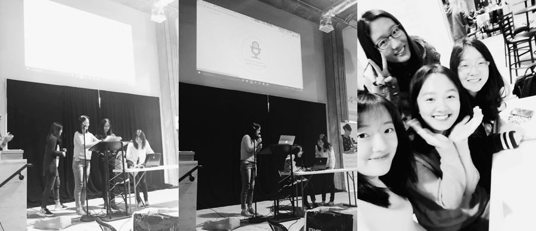

Duration
28 hours @ ATT Hackathon.
My Role
As the initiator of the team, I led the brainstorming before we arrived at the idea to accomplish during the Hackathon. Inspired by a paper that I have read, I came up with the initial idea of True Sight. Together with my teammates, we finalized and enriched the idea. During the design phase, I came up with the workflows, wireframes and designed the responsive web app of True Sight.
Methods and Tools
Storyboarding, Wireframing, Sketch, HTML/CSS/JavaScript
Award!
At last, we won the Best APP from a All Women Team out of 16 teams in the pitch. The projects were evaluated by professional judges from the broder Atlanta tech commiunity.
STORY
Alice.
Alice is a junior high school student. She likes equations and graphics and is good with a calculator.
You can't tell from the photo, but she is visually-impaired.
She is eager to play her strengths. When Alice hears that opportunities in STEM are plentiful, she immediately decides that she wants to be part of it. However, things are not easy. Although there are plenty of resources in the school, which let Alice learn through tactile graphics and models. She still feels powerlessness when she wants to learn about something without existing resources.
Loved Ones of Alice.
Alice's have the most caring and kind parents in the world. They know about Alice's interest in science and engineering. And they think it's important to continue to instill the interest. But they are now worried that Alice sometimes couldn't get the right resources for this special learning, like models and so on. And they themselves are not familiar with technology and education and couldn't explain to Alice. They are afraid that Alice may lose the natural love of entering STEM.
Strangers.
Amy and her friends have strong passion! They are warm-hearted and talented. And they would always like to make an impact on the society through their designs.
SOLUTION
True Sight is a non-profit online community where designers could upload their creative models. Meanwhile, vision impaired students can download, print and learn the models. It is aimed to use 3d printing technology to solve the problems faced by vision-impaired students and children when they are not able to see the images and models used to explain the concepts and terms.
What if?
Challenge #1
How do students learn about the models?
It is not realistic to print out a long paragraph of braille along with the model. So how will students learn about the model if there are no teachers around? Audio seemed to be the best and natural solution. We applied the speech input/output technology. Users could directly interact with our application through speech. They may search for a term they want to learn and ask our application to play the annotations of an existing model.
Challenge #2
How do we tell which model the student is taking?
To solve this problem, we decied to mark every model with a unique number. Therefore, the user could tell the system that he wants to learn about NO.7 model and our system will tell the user that it is a model of an elephant.
Challenge #3
How will the mark be added to the model?
This relys on the designers who upload the model. When a designer wants to upload a model, we will assign a unique number to this model and let the designer build the braille somewhere distinguishable. After this, the model is uploaded and audited.
Below is the work flow of Ture Sight that I created.
PROTOTYPE
Given that we only had limited time, after sorting out the main structure of True Sight, we started hacking. A lot of details were settled later in discussions and iterations. Due to the time limit, we didn't perform detailed and systematical research on users and markets. Instead, we dug some existing knowledge to back up the decision and tried our best to build empathy with users.

During the design and prototype phase, we worked in two pairs. I was responsible for user flow design and the responsive interface design. I also assisted my teammate, Qiaochu, to prototype the web app using Bootstrap and HTML/CSS.
The speech input and output relied on Nuance Mix. We also structured the backend of our web app using Node.js and MongoDB.

REFLECTION
Always try to design something big.
I've always tried to design something and make a large impact. The idea of Ture Sight was inspired by Lei Shi's talk given on Jan. 2016 at Zhejiang University when I was still an undergraduate student. When I heard about his idea of enhancing learning by improving experiences with 3D models, I was very impressed. His research inspired me to design this non-profit community and hopefully, make an impact.
A great team with talented girls made all of these happen.

True Sight was my first Hackathon experience and I felt so lucky to spend the sleepless 28 hours with my loved girls. Finally, when we finished the pitch and went back to the seat, I was still thinking, "how could this be possible in such a short time?" All I could think of was the encouragement in the group chat at midnight and the helpful suggestions and support throughout the project.
I've been in an atmosphere where everyone tells me, "Xinyu, tech, and engineering are for men and you deserve something better." I usually smile and then ignore them but sometimes I just cannot help asking back, "What's better? Daydreaming marrying some rich guy and giving up what I love?" This is so ridiculous. Other people see all the negatives and focus on all the barriers but I don’t. In fact, I see these barriers as hurdles that push me to jump higher and run faster.
Women in Tech do great work just like what my teammates did. If you have a minute or two, check out them ( Yiran Ma, Qiaochu Mu, Edith Li ) as well. And I know all of us all are going to go further on this way.